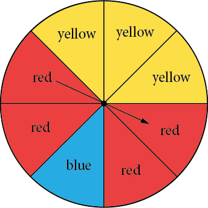
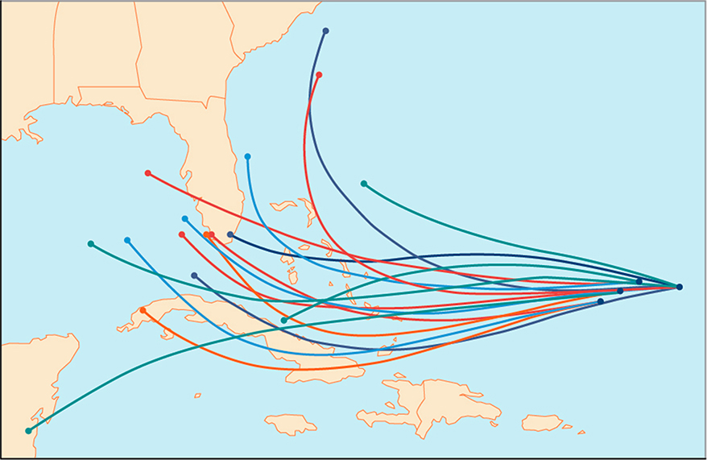
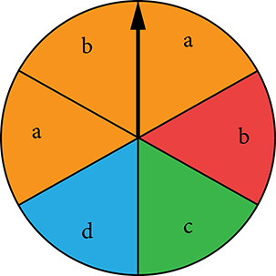
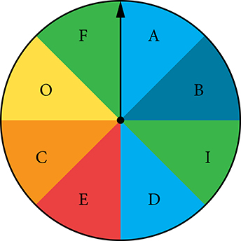
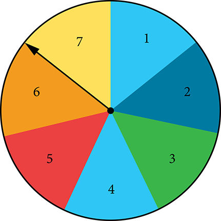

Probability
Learning Objectives
- Introduction to Sample Spaces and Computing Basic Probabilities.
Objective 1: Introduction to Sample Spaces and Computing Basic Probabilities.
Many events in life are inherently uncertain: will it snow tomorrow? Am I going to get an ‘A’ in this course? None of these questions can be answered with certainty, however, we might say that some are unlikely, and others are more likely.
The probability of an event is a description of how likely it is that an event will happen. A probability is a number between 0 and 1 (that is, between 0% and 100%), where probabilities closer to 100% are very likely to occur, and probabilities closer to 0% are very unlikely to occur. A probability of 0% means the event is impossible, and a probability of 100% means the event will certainly occur.
A probability model is a mathematical description of an experiment listing all possible outcomes and their associated probabilities. It is defined by its sample space, events within the sample space, and probabilities associated with each event.
The sample space S for a probability model is the set of all possible outcomes. For example, the sample space for rolling a dice is the set 1,2,3,4,5,6.This notation is referred to as roster notation.
An event A is a subset of the sample space S. For example, the event “Rolling an even number” is the subset 2,4,6.
To calculate the probability of an event, we divide the number of possible outcomes of the event by the number of possible outcomes of the sample space.
It is important to note that in order to use this formula, all outcomes must be equally likely to happen.
For example, the probability of rolling an even number with a standard dice is:
Basic Probability. (Simple intro to sample spaces)
Tossing a coin:
- ⓐ Describe in set notation the sample space of tossing a coin.
- ⓑ Find the probability of “Coin lands on heads.”
Rolling a die:
- ⓐ Describe in set notation the event “Rolling an odd number.”
- ⓑ Find the probability of “Rolling an odd number.”
Drawing a card:
- ⓐ Describe in set notation the event “Drawing an Ace.”
- ⓑ Find the probability of “Drawing an Ace.”
Solution
- ⓐ When you toss a coin, there are two outcomes. The sample space is: Heads, Tails.
- ⓑ There is only one outcome for the coin landing on heads, so P(Lands on Heads)=12.
- ⓐ When you roll a dice, there are six outcomes. The event "Rolling an odd number" has three outcomes. The event is set notation is: 1,3,5.
- ⓑ P(rolling an odd number)=3/6=1/2.
- ⓐ When you draw a card, there are 52 outcomes. The event "Drawing an Ace" has four outcomes. The event in set notation is:Ace of hearts, Ace of diamonds, Ace of clubs, Ace of spades.
- ⓑ P(Drawing an Ace)=4/52=1/13.
Practice Makes Perfect
Spinning a dial:

- ⓐ Describe the sample space in set notation.
- ⓑ Find the probability of “Dial stops on a yellow slice.”
- ⓒ Find the probability of “Dial stops on a red slice.”
- ⓓ Find the probability of “Dial stops on a blue slice.”
- Draw a diagram showing the sample space of a standard deck of 52 cards. Begin by distinguishing between red and black cards showing the number of each. Next show the suits: diamonds, hearts, clubs and spades. Below this list the number or face card appearing in each suit. Use your diagram to help you find the following.
- ⓐ Describe in set notation the event “Drawing a king.”
- ⓑ Find the probability of “Drawing a king.”
- ⓒ Describe in set notation the event “Drawing a club.”
- ⓓ Find the probability of “Drawing a club.”
- ⓔ Find the probability of “Drawing a red six.”
- ⓕ Find the probability of “Drawing a black queen.”

Residents of the Southeastern United States are all too familiar with charts, known as spaghetti models, such as the one in Figure 1. They combine a collection of weather data to predict the most likely path of a hurricane. Each colored line represents one possible path. The group of squiggly lines can begin to resemble strands of spaghetti, hence the name. In this section, we will investigate methods for making these types of predictions.
Constructing Probability Models
Suppose we roll a six-sided number cube. Rolling a number cube is an example of an experiment, or an activity with an observable result. The numbers on the cube are possible results, or outcomes, of this experiment. The set of all possible outcomes of an experiment is called the sample space of the experiment. The sample space for this experiment is An event is any subset of a sample space.
The likelihood of an event is known as probability. The probability of an event is a number that always satisfies where 0 indicates an impossible event and 1 indicates a certain event. A probability model is a mathematical description of an experiment listing all possible outcomes and their associated probabilities. For instance, if there is a 1% chance of winning a raffle and a 99% chance of losing the raffle, a probability model would look much like Table 1.
| Outcome | Probability |
|---|---|
| Winning the raffle | 1% |
| Losing the raffle | 99% |
The sum of the probabilities listed in a probability model must equal 1, or 100%.
Constructing a Probability Model
Construct a probability model for rolling a single, fair die, with the event being the number shown on the die.
Solution
Begin by making a list of all possible outcomes for the experiment. The possible outcomes are the numbers that can be rolled: 1, 2, 3, 4, 5, and 6. There are six possible outcomes that make up the sample space.
Assign probabilities to each outcome in the sample space by determining a ratio of the outcome to the number of possible outcomes. There is one of each of the six numbers on the cube, and there is no reason to think that any particular face is more likely to show up than any other one, so the probability of rolling any number is
| Outcome | Roll of 1 | Roll of 2 | Roll of 3 | Roll of 4 | Roll of 5 | Roll of 6 |
| Probability |
Computing Probabilities of Equally Likely Outcomes
Let be a sample space for an experiment. When investigating probability, an event is any subset of When the outcomes of an experiment are all equally likely, we can find the probability of an event by dividing the number of outcomes in the event by the total number of outcomes in Suppose a number cube is rolled, and we are interested in finding the probability of the event “rolling a number less than or equal to 4.” There are 4 possible outcomes in the event and 6 possible outcomes in so the probability of the event is
Computing the Probability of an Event with Equally Likely Outcomes
A six-sided number cube is rolled. Find the probability of rolling an odd number.
Solution
The event “rolling an odd number” contains three outcomes. There are 6 equally likely outcomes in the sample space. Divide to find the probability of the event.
Computing the Probability of the Union of Two Events
We are often interested in finding the probability that one of multiple events occurs. Suppose we are playing a card game, and we will win if the next card drawn is either a heart or a king. We would be interested in finding the probability of the next card being a heart or a king. The union of two events is the event that occurs if either or both events occur.
Suppose the spinner in Figure 2 is spun. We want to find the probability of spinning orange or spinning a

There are a total of 6 sections, and 3 of them are orange. So the probability of spinning orange is There are a total of 6 sections, and 2 of them have a So the probability of spinning a is If we added these two probabilities, we would be counting the sector that is both orange and a twice. To find the probability of spinning an orange or a we need to subtract the probability that the sector is both orange and has a
The probability of spinning orange or a is
Computing the Probability of the Union of Two Events
A card is drawn from a standard deck. Find the probability of drawing a heart or a 7.
Solution
A standard deck contains an equal number of hearts, diamonds, clubs, and spades. So the probability of drawing a heart is There are four 7s in a standard deck, and there are a total of 52 cards. So the probability of drawing a 7 is
The only card in the deck that is both a heart and a 7 is the 7 of hearts, so the probability of drawing both a heart and a 7 is Substitute into the formula.
The probability of drawing a heart or a 7 is
Computing the Probability of Mutually Exclusive Events
Suppose the spinner in Figure 2 is spun again, but this time we are interested in the probability of spinning an orange or a There are no sectors that are both orange and contain a so these two events have no outcomes in common. Events are said to be mutually exclusive events when they have no outcomes in common. Because there is no overlap, there is nothing to subtract, so the general formula is
Notice that with mutually exclusive events, the intersection of and is the empty set. The probability of spinning an orange is and the probability of spinning a is We can find the probability of spinning an orange or a simply by adding the two probabilities.
The probability of spinning an orange or a is
Computing the Probability of the Union of Mutually Exclusive Events
A card is drawn from a standard deck. Find the probability of drawing a heart or a spade.
Solution
The events “drawing a heart” and “drawing a spade” are mutually exclusive because they cannot occur at the same time. The probability of drawing a heart is and the probability of drawing a spade is also so the probability of drawing a heart or a spade is
Using the Complement Rule to Compute Probabilities
We have discussed how to calculate the probability that an event will happen. Sometimes, we are interested in finding the probability that an event will not happen. The complement of an event denoted is the set of outcomes in the sample space that are not in For example, suppose we are interested in the probability that a horse will lose a race. If event is the horse winning the race, then the complement of event is the horse losing the race.
To find the probability that the horse loses the race, we need to use the fact that the sum of all probabilities in a probability model must be 1.
The probability of the horse winning added to the probability of the horse losing must be equal to 1. Therefore, if the probability of the horse winning the race is the probability of the horse losing the race is simply
Using the Complement Rule to Calculate Probabilities
Two six-sided number cubes are rolled.
- ⓐFind the probability that the sum of the numbers rolled is less than or equal to 3.
- ⓑFind the probability that the sum of the numbers rolled is greater than 3.
Solution
The first step is to identify the sample space, which consists of all the possible outcomes. There are two number cubes, and each number cube has six possible outcomes. Using the Multiplication Principle, we find that there are or total possible outcomes. So, for example, 1-1 represents a 1 rolled on each number cube.
- ⓐWe need to count the number of ways to roll a sum of 3 or less. These would include the following outcomes: 1-1, 1-2, and 2-1. So there are only three ways to roll a sum of 3 or less. The probability is
- ⓑRather than listing all the possibilities, we can use the Complement Rule. Because we have already found the probability of the complement of this event, we can simply subtract that probability from 1 to find the probability that the sum of the numbers rolled is greater than 3.
Computing Probability Using Counting Theory
Many interesting probability problems involve counting principles, permutations, and combinations. In these problems, we will use permutations and combinations to find the number of elements in events and sample spaces. These problems can be complicated, but they can be made easier by breaking them down into smaller counting problems.
Assume, for example, that a store has 8 cellular phones and that 3 of those are defective. We might want to find the probability that a couple purchasing 2 phones receives 2 phones that are not defective. To solve this problem, we need to calculate all of the ways to select 2 phones that are not defective as well as all of the ways to select 2 phones. There are 5 phones that are not defective, so there are ways to select 2 phones that are not defective. There are 8 phones, so there are ways to select 2 phones. The probability of selecting 2 phones that are not defective is:
Computing Probability Using Counting Theory
A child randomly selects 5 toys from a bin containing 3 bunnies, 5 dogs, and 6 bears.
- ⓐFind the probability that only bears are chosen.
- ⓑFind the probability that 2 bears and 3 dogs are chosen.
- ⓒFind the probability that at least 2 dogs are chosen.
Solution
- ⓐWe need to count the number of ways to choose only bears and the total number of possible ways to select 5 toys. There are 6 bears, so there are ways to choose 5 bears. There are 14 toys, so there are ways to choose any 5 toys.
- ⓑWe need to count the number of ways to choose 2 bears and 3 dogs and the total number of possible ways to select 5 toys. There are 6 bears, so there are ways to choose 2 bears. There are 5 dogs, so there are ways to choose 3 dogs. Since we are choosing both bears and dogs at the same time, we will use the Multiplication Principle. There are ways to choose 2 bears and 3 dogs. We can use this result to find the probability.
- ⓒIt is often easiest to solve “at least” problems using the Complement Rule. We will begin by finding the probability that fewer than 2 dogs are chosen. If less than 2 dogs are chosen, then either no dogs could be chosen, or 1 dog could be chosen.
When no dogs are chosen, all 5 toys come from the 9 toys that are not dogs. There are ways to choose toys from the 9 toys that are not dogs. Since there are 14 toys, there are ways to choose the 5 toys from all of the toys.
If there is 1 dog chosen, then 4 toys must come from the 9 toys that are not dogs, and 1 must come from the 5 dogs. Since we are choosing both dogs and other toys at the same time, we will use the Multiplication Principle. There are ways to choose 1 dog and 1 other toy.
Because these events would not occur together and are therefore mutually exclusive, we add the probabilities to find the probability that fewer than 2 dogs are chosen.
We then subtract that probability from 1 to find the probability that at least 2 dogs are chosen.
Key Equations
| probability of an event with equally likely outcomes | |
| probability of the union of two events | |
| probability of the union of mutually exclusive events | |
| probability of the complement of an event |
Key Concepts
- Probability is always a number between 0 and 1, where 0 means an event is impossible and 1 means an event is certain.
- The probabilities in a probability model must sum to 1. See Example 2.
- When the outcomes of an experiment are all equally likely, we can find the probability of an event by dividing the number of outcomes in the event by the total number of outcomes in the sample space for the experiment. See Example 3.
- To find the probability of the union of two events, we add the probabilities of the two events and subtract the probability that both events occur simultaneously. See Example 4.
- To find the probability of the union of two mutually exclusive events, we add the probabilities of each of the events. See Example 5.
- The probability of the complement of an event is the difference between 1 and the probability that the event occurs. See Example 6.
- In some probability problems, we need to use permutations and combinations to find the number of elements in events and sample spaces. See Example 7.
Section Exercises
Verbal
What term is used to express the likelihood of an event occurring? Are there restrictions on its values? If so, what are they? If not, explain.
Solution
probability; The probability of an event is restricted to values between and inclusive of and
What is a sample space?
What is an experiment?
Solution
An experiment is an activity with an observable result.
What is the difference between events and outcomes? Give an example of both using the sample space of tossing a coin 50 times.
The union of two sets is defined as a set of elements that are present in at least one of the sets. How is this similar to the definition used for the union of two events from a probability model? How is it different?
Solution
The probability of the union of two events occurring is a number that describes the likelihood that at least one of the events from a probability model occurs. In both a union of sets and a union of events the union includes either or both. The difference is that a union of sets results in another set, while the union of events is a probability, so it is always a numerical value between and
Numeric
For the following exercises, use the spinner shown in Figure 3 to find the probabilities indicated.

Landing on red
Landing on a vowel
Solution
Not landing on blue
Landing on purple or a vowel
Solution
Landing on blue or a vowel
Landing on green or blue
Solution
Landing on yellow or a consonant
Not landing on yellow or a consonant
Solution
For the following exercises, two coins are tossed.
What is the sample space?
Find the probability of tossing two heads.
Solution
Find the probability of tossing exactly one tail.
Find the probability of tossing at least one tail.
Solution
For the following exercises, four coins are tossed.
What is the sample space?
Find the probability of tossing exactly two heads.
Solution
Find the probability of tossing exactly three heads.
Find the probability of tossing four heads or four tails.
Solution
Find the probability of tossing all tails.
Find the probability of tossing not all tails.
Solution
Find the probability of tossing exactly two heads or at least two tails.
Find the probability of tossing either two heads or three heads.
Solution
For the following exercises, one card is drawn from a standard deck of cards. Find the probability of drawing the following:
A club
A two
Solution
Six or seven
Red six
Solution
An ace or a diamond
A non-ace
Solution
A heart or a non-jack
For the following exercises, two dice are rolled, and the results are summed.
Construct a table showing the sample space of outcomes and sums.
Solution
| 1 | 2 | 3 | 4 | 5 | 6 | |
| 1 | (1,1) 2 |
(1,2) 3 |
(1,3) 4 |
(1,4) 5 |
(1,5) 6 |
(1,6) 7 |
| 2 | (2,1) 3 |
(2,2) 4 |
(2,3) 5 |
(2,4) 6 |
(2,5) 7 |
(2,6) 8 |
| 3 | (3,1) 4 |
(3,2) 5 |
(3,3) 6 |
(3,4) 7 |
(3,5) 8 |
(3,6) 9 |
| 4 | (4,1) 5 |
(4,2) 6 |
(4,3) 7 |
(4,4) 8 |
(4,5) 9 |
(4,6) 10 |
| 5 | (5,1) 6 |
(5,2) 7 |
(5,3) 8 |
(5,4) 9 |
(5,5) 10 |
(5,6) 11 |
| 6 | (6,1) 7 |
(6,2) 8 |
(6,3) 9 |
(6,4) 10 |
(6,5) 11 |
(6,6) 12 |
Find the probability of rolling a sum of
Find the probability of rolling at least one four or a sum of
Solution
Find the probability of rolling an odd sum less than
Find the probability of rolling a sum greater than or equal to
Solution
Find the probability of rolling a sum less than
Find the probability of rolling a sum less than or greater than
Solution
Find the probability of rolling a sum between and inclusive.
Find the probability of rolling a sum of or
Solution
Find the probability of rolling any sum other than or
For the following exercises, a coin is tossed, and a card is pulled from a standard deck. Find the probability of the following:
A head on the coin or a club
Solution
A tail on the coin or red ace
A head on the coin or a face card
Solution
No aces
For the following exercises, use this scenario: a bag of M&Ms contains blue, brown, orange, yellow, red, and green M&Ms. Reaching into the bag, a person grabs 5 M&Ms.
What is the probability of getting all blue M&Ms?
Solution
What is the probability of getting blue M&Ms?
What is the probability of getting blue M&Ms?
Solution
What is the probability of getting no brown M&Ms?
Extensions
Use the following scenario for the exercises that follow: In the game of Keno, a player starts by selecting numbers from the numbers to After the player makes his selections, winning numbers are randomly selected from numbers to A win occurs if the player has correctly selected or of the winning numbers. (Round all answers to the nearest hundredth of a percent.)
What is the percent chance that a player selects exactly 3 winning numbers?
Solution
What is the percent chance that a player selects exactly 4 winning numbers?
What is the percent chance that a player selects all 5 winning numbers?
Solution
What is the percent chance of winning?
How much less is a player’s chance of selecting 3 winning numbers than the chance of selecting either 4 or 5 winning numbers?
Solution
Real-World Applications
Use this data for the exercises that follow: In 2013, there were roughly 317 million citizens in the United States, and about 40 million were elderly (aged 65 and over).United States Census Bureau. http://www.census.gov
If you meet a U.S. citizen, what is the percent chance that the person is elderly? (Round to the nearest tenth of a percent.)
If you meet five U.S. citizens, what is the percent chance that exactly one is elderly? (Round to the nearest tenth of a percent.)
Solution
If you meet five U.S. citizens, what is the percent chance that three are elderly? (Round to the nearest tenth of a percent.)
If you meet five U.S. citizens, what is the percent chance that four are elderly? (Round to the nearest thousandth of a percent.)
Solution
It is predicted that by 2030, one in five U.S. citizens will be elderly. How much greater will the chances of meeting an elderly person be at that time? What policy changes do you foresee if these statistics hold true?
Chapter Review Exercises
Sequences and Their Notation
Write the first four terms of the sequence defined by the recursive formula
Solution
Evaluate
Write the first four terms of the sequence defined by the explicit formula
Solution
Write the first four terms of the sequence defined by the explicit formula
Arithmetic Sequences
Is the sequence arithmetic? If so, find the common difference.
Solution
The sequence is arithmetic. The common difference is
Is the sequence arithmetic? If so, find the common difference.
An arithmetic sequence has the first term and common difference What are the first five terms?
Solution
An arithmetic sequence has terms and What is the first term?
Write a recursive formula for the arithmetic sequence
Solution
Write a recursive formula for the arithmetic sequence and then find the 31st term.
Write an explicit formula for the arithmetic sequence
Solution
How many terms are in the finite arithmetic sequence
Geometric Sequences
Find the common ratio for the geometric sequence
Solution
Is the sequence 4, 16, 28, 40 … geometric? If so find the common ratio. If not, explain why.
A geometric sequence has terms and . What are the first five terms?
Solution
4, 16, 64, 256, 1024
A geometric sequence has the first term and common ratio What is the 8th term?
What are the first five terms of the geometric sequence
Solution
Write a recursive formula for the geometric sequence
Write an explicit formula for the geometric sequence
Solution
How many terms are in the finite geometric sequence
Series and Their Notation
Use summation notation to write the sum of terms from to
Solution
Use summation notation to write the sum that results from adding the number twenty times.
Use the formula for the sum of the first terms of an arithmetic series to find the sum of the first eleven terms of the arithmetic series 2.5, 4, 5.5, … .
Solution
A ladder has tapered rungs, the lengths of which increase by a common difference. The first rung is 5 inches long, and the last rung is 20 inches long. What is the sum of the lengths of the rungs?
Use the formula for the sum of the first n terms of a geometric series to find for the series
Solution
The fees for the first three years of a hunting club membership are given in Table 4. If fees continue to rise at the same rate, how much will the total cost be for the first ten years of membership?
| Year | Membership Fees |
|---|---|
| 1 | $1500 |
| 2 | $1950 |
| 3 | $2535 |
Find the sum of the infinite geometric series
Solution
A ball has a bounce-back ratio of the height of the previous bounce. Write a series representing the total distance traveled by the ball, assuming it was initially dropped from a height of 5 feet. What is the total distance? (Hint: the total distance the ball travels on each bounce is the sum of the heights of the rise and the fall.)
Alejandro deposits $80 of his monthly earnings into an annuity that earns 6.25% annual interest, compounded monthly. How much money will he have saved after 5 years?
Solution
$5,617.61
The twins Hoa and Binh both opened retirement accounts on their 21st birthday. Hoa deposits $4,800.00 each year, earning 5.5% annual interest, compounded monthly. Binh deposits $3,600.00 each year, earning 8.5% annual interest, compounded monthly. Which twin will earn the most interest by the time they are years old? How much more?
Counting Principles
How many ways are there to choose a number from the set that is divisible by either or
Solution
6
In a group of musicians, play piano, play trumpet, and play both piano and trumpet. How many musicians play either piano or trumpet?
How many ways are there to construct a 4-digit code if numbers can be repeated?
Solution
A palette of water color paints has 3 shades of green, 3 shades of blue, 2 shades of red, 2 shades of yellow, and 1 shade of black. How many ways are there to choose one shade of each color?
Calculate
Solution
In a group of first-year, second-year, third-year, and fourth-year students, how many ways can a president, vice president, and treasurer be elected?
Calculate
Solution
A coffee shop has 7 Guatemalan roasts, 4 Cuban roasts, and 10 Costa Rican roasts. How many ways can the shop choose 2 Guatemalan, 2 Cuban, and 3 Costa Rican roasts for a coffee tasting event?
How many subsets does the set have?
Solution
A day spa charges a basic day rate that includes use of a sauna, pool, and showers. For an extra charge, guests can choose from the following additional services: massage, body scrub, manicure, pedicure, facial, and straight-razor shave. How many ways are there to order additional services at the day spa?
How many distinct ways can the word DEADWOOD be arranged?
Solution
How many distinct rearrangements of the letters of the word DEADWOOD are there if the arrangement must begin and end with the letter D?
Binomial Theorem
Evaluate the binomial coefficient
Solution
Use the Binomial Theorem to expand
Use the Binomial Theorem to write the first three terms of
Solution
Find the fourth term of without fully expanding the binomial.
Probability
For the following exercises, assume two die are rolled.
Construct a table showing the sample space.
Solution
| 1 | 2 | 3 | 4 | 5 | 6 | |
| 1 | 1,1 | 1,2 | 1,3 | 1,4 | 1,5 | 1,6 |
| 2 | 2,1 | 2,2 | 2,3 | 2,4 | 2,5 | 2,6 |
| 3 | 3,1 | 3,2 | 3,3 | 3,4 | 3,5 | 3,6 |
| 4 | 4,1 | 4,2 | 4,3 | 4,4 | 4,5 | 4,6 |
| 5 | 5,1 | 5,2 | 5,3 | 5,4 | 5,5 | 5,6 |
| 6 | 6,1 | 6,2 | 6,3 | 6,4 | 6,5 | 6,6 |
What is the probability that a roll includes a
What is the probability of rolling a pair?
Solution
What is the probability that a roll includes a 2 or results in a pair?
What is the probability that a roll doesn’t include a 2 or result in a pair?
Solution
What is the probability of rolling a 5 or a 6?
What is the probability that a roll includes neither a 5 nor a 6?
Solution
For the following exercises, use the following data: An elementary school survey found that 350 of the 500 students preferred soda to milk. Suppose 8 children from the school are attending a birthday party. (Show calculations and round to the nearest tenth of a percent.)
What is the percent chance that all the children attending the party prefer soda?
What is the percent chance that at least one of the children attending the party prefers milk?
Solution
What is the percent chance that exactly 3 of the children attending the party prefer soda?
What is the percent chance that exactly 3 of the children attending the party prefer milk?
Solution
Practice Test
Write the first four terms of the sequence defined by the recursive formula
Solution
Write the first four terms of the sequence defined by the explicit formula
Is the sequence arithmetic? If so find the common difference.
Solution
The sequence is arithmetic. The common difference is
An arithmetic sequence has the first term and common difference What is the 6th term?
Write a recursive formula for the arithmetic sequence and then find the 22nd term.
Solution
Write an explicit formula for the arithmetic sequence and then find the 32nd term.
Is the sequence geometric? If so find the common ratio. If not, explain why.
Solution
The sequence is geometric. The common ratio is
What is the 11th term of the geometric sequence
Write a recursive formula for the geometric sequence
Solution
Write an explicit formula for the geometric sequence
Use summation notation to write the sum of terms from to
Solution
A community baseball stadium has 10 seats in the first row, 13 seats in the second row, 16 seats in the third row, and so on. There are 56 rows in all. What is the seating capacity of the stadium?
Use the formula for the sum of the first terms of a geometric series to find
Solution
Find the sum of the infinite geometric series
Ramla deposits $3,600 into a retirement fund each year. The fund earns 7.5% annual interest, compounded monthly. If she opened her account when she was 20 years old, how much will she have by the time she’s 55? How much of that amount was interest earned?
Solution
Total in account: Interest earned:
In a competition of 50 professional ballroom dancers, 22 compete in the fox-trot competition, 18 compete in the tango competition, and 6 compete in both the fox-trot and tango competitions. How many dancers compete in the fox-trot or tango competitions?
A buyer of a new sedan can custom order the car by choosing from 5 different exterior colors, 3 different interior colors, 2 sound systems, 3 motor designs, and either manual or automatic transmission. How many choices does the buyer have?
Solution
To allocate annual bonuses, a manager must choose his top four employees and rank them first to fourth. In how many ways can he create the “Top-Four” list out of the 32 employees?
A music group needs to choose 3 songs to play at the annual Battle of the Bands. How many ways can they choose their set if they have 15 songs to pick from?
Solution
A self-serve frozen yogurt shop has 8 candy toppings and 4 fruit toppings to choose from. How many ways are there to top a frozen yogurt?
How many distinct ways can the word EVANESCENCE be arranged if the anagram must end with the letter E?
Solution
Use the Binomial Theorem to expand
Find the seventh term of without fully expanding the binomial.
Solution
For the following exercises, use the spinner in Figure 4.

Construct a probability model showing each possible outcome and its associated probability. (Use the first letter for colors.)
What is the probability of landing on an odd number?
Solution
What is the probability of landing on blue?
What is the probability of landing on blue or an odd number?
Solution
What is the probability of landing on anything other than blue or an odd number?
A bowl of candy holds 16 peppermint, 14 butterscotch, and 10 strawberry flavored candies. Suppose a person grabs a handful of 7 candies. What is the percent chance that exactly 3 are butterscotch? (Show calculations and round to the nearest tenth of a percent.)
Solution